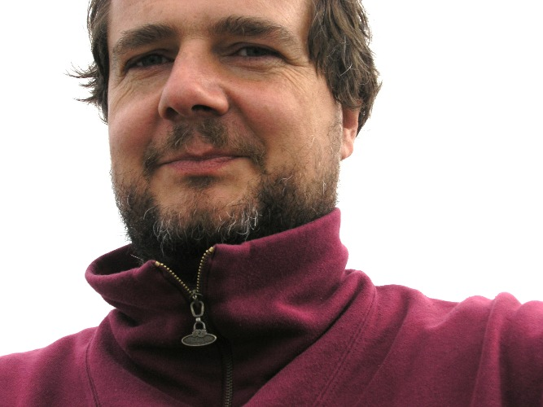

|
E-Mail: peter.mueller@mathematik.uni-wuerzburg.de PGP: Public Key Telefon: +49 931 31-85012 Fax: +49 931 31-85599 Zimmer: Mathematik West (Gebäude 30), 03.003 Sprechstunde: nach Vereinbarung Sekretariat: Ursula Radler, +49 931 31-85015, 03.019 |
 |
Impressum + Datenschutz • Letzte Änderung: 4. August 2019